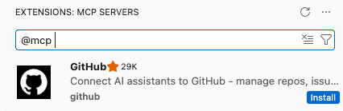
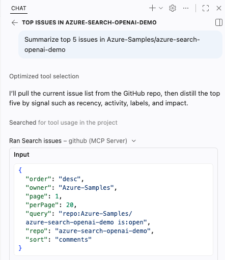
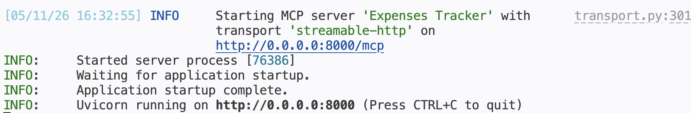

Introductions
About me

Python Cloud Advocate at Microsoft
Formerly: UC Berkeley, Coursera, Khan Academy, Google
Find me online at:
| Mastodon | @pamelafox@fosstodon.org |
| BlueSky | @pamelafox.bsky.social |
| @pamelafox | |
| www.linkedin.com/in/pamela-s-fox/ | |
| GitHub | www.github.com/pamelafox |
| Website | pamelafox.org |
About you?
Turn to your neighbor and introduce yourself:
- Name
- Location
- Is this your first PyCon, or have you attended before?
- What are you excited for at PyCon 2026?
- Make up a new meaning for "MCP" (e.g. "More Coffee Please") and write it on a sticky note.
MCP 101
AI agents
An AI agent uses an LLM to run tools in a loop to achieve a goal.
Agents are often augmented by:
- Context from files, docs, or databases
- Memory across a session or project
- Human approvals and feedback
You've probably used an AI agent...
Coding agents like GitHub Copilot and Claude Code are AI agents.
Chatbots like ChatGPT also have agentic loops now.
You can also build your own agents in Python.
The agentic loop in action
Each tool result unlocks the next call:
find_customer("Pamela")get_last_order("cust_42")check_inventory(items)find_substitute("baguette")Agents rely on LLM tool-calling
LLMs have been trained to know how to "call tools".
- LLM sees the available tools and their descriptions.
- LLM suggests a tool name and arguments.
- Agent runtime runs the actual code.
- Tool result is sent back to the LLM as context.
- LLM decides whether to call another tool or answer.
The model does not execute your Python function.
The runtime does.
MCP: Model Context Protocol
MCP is the open standard that tells agent runtimes how to discover and connect to the tools they can call.
MCP architecture
MCP client/server request flow
MCP clients
Clients with the strongest support:
Support across 100+ clients varies:
| Capability | Support |
|---|---|
| Tools | All |
| Prompts | 43/113 |
| Resources | 47/113 |
| OAuth with DCR | 16/113 |
| Elicitation | 16/113 |
| Apps | 10/113 |
Coding agents + MCP
Coding agent: VS Code
VS Code (+ GitHub Copilot) supports nearly all of the MCP specification.
1. Add MCP servers
Install from Extensions:

Or configure .vscode/mcp.json file:
{
"servers": {
"github": {
"type": "http",
"url": "https://api.githubcopilot.com/mcp/"
}
}
}2. Use from Copilot
Once added, tools appear in chat with approvals and structured results.

Coding agent: Claude Code
Claude Code connects terminal-first coding workflows to MCP servers.
1. Add MCP servers
Add remote servers from the CLI:
claude mcp add \
--transport http huggingface \
'https://huggingface.co/mcp?login'Then confirm what Claude Code can see:
claude mcp listFor authenticated servers, you will need to start up claude to go through the auth flow.
2. Use from Claude Code
Ask in the terminal, and Claude Code can call Hugging Face tools through MCP.
> what research papers are in 2026
about vector retrieval?
⏺ huggingface - Paper Search (MCP)
query: "vector retrieval 2026"
concise_only: true
120 papers matched the query.
Here are the first 12 results.
## Foundations of Vector RetrievalPython agents + MCP
Building agents with frameworks
An agent framework coordinates model calls, tool schemas, tool execution, memory or state, and final responses.
| Framework | Description |
|---|---|
| langchain v1 | An agent-centric framework built on top of LangGraph, with optional LangSmith monitoring. |
| pydantic-ai | A flexible framework designed for type safety and observability, from the creators of Pydantic. |
| agent-framework | A framework from Microsoft with support for agentic patterns and full integration with Azure offerings. Successor to AutoGen and Semantic Kernel. |
Pydantic AI + MCP
from pydantic_ai import Agent
from pydantic_ai.mcp import MCPServerStreamableHTTP
from pydantic_ai.models.openai import OpenAIChatModel
model = OpenAIChatModel("gpt-5.5")
server = MCPServerStreamableHTTP(url="https://learn.microsoft.com/api/mcp")
agent = Agent(model, toolsets=[server],
system_prompt="Use available tools to answer questions.")
result = await agent.run("How do I use DefaultAzureCredential in Python?")
print(result.output)
Exercise time
Exercise 1:
Connect your coding agent to public MCP servers
tinyurl.com/pyconmcp-ex1
Bonus: Exercise 2
Build a Python agent that uses MCP servers
tinyurl.com/pyconmcp-ex2
🙋🏽♀️ 🙋🏻♂️ 🙋🏿 🙋🏼♀️ 🙋🏾♂️ Got a question? Raise your hand, we'll come around!
Building an MCP server
Python MCP frameworks
| Framework | Description |
|---|---|
| python-sdk | Official Python SDK for MCP. Lets you build both clients and servers fully compatible with the protocol specification. Handles transport (stdio, SSE, HTTP), message cycles, tools, resources, and prompts. |
| fastmcp | Framework built on top of the official SDK. Adds production-focused features like server composition, proxying, OpenAPI/FastAPI generation, enterprise authentication (Google, GitHub, Azure, Auth0, etc.), deployment utilities, and client libraries. |
FastMCP server skeleton
from fastmcp import FastMCP
mcp = FastMCP("Expenses tracker")
# Define tools, prompts, and resources here...
if __name__ == "__main__":
mcp.run(transport="streamable-http", host="0.0.0.0", port=8420)
MCP transports: STDIO vs. HTTP
| STDIO | HTTP (Streamable) | |
|---|---|---|
| Client config | Command to run:uv run mcp_server.py | Server URL:http://localhost:8420/mcp |
| Startup | Client launches the server process | Server runs before clients connect |
| Best for | Local tools, quick tests, single-user apps | Remote access, web apps, multiple clients |
| Tradeoff | Simple, but tied to one local process | More flexible, but needs host/port setup |
Tool with FastMCP
@mcp.tool
async def add_expense(
date: Annotated[date, "Date of the expense in YYYY-MM-DD format"],
amount: Annotated[float, "Positive numeric amount of the expense"],
category: Annotated[Category, "Category label"],
description: Annotated[str, "Human-readable description of the expense"],
payment_method: Annotated[PaymentMethod, "Payment method used"],
) -> str:
"""Add a new expense to the expenses.csv file."""
# Implementation ...
return f"Added expense: ${amount} for {description} on {date_iso}"
Full example: expenses_tracker.py
Tool signature → JSON schema
This tool signature:
becomes this schema:
Resource with FastMCP
@mcp.resource("resource://expenses")
async def get_expenses_data():
csv_content = f"Expense data ({len(expenses_data)} entries):\n\n"
for expense in expenses_data:
csv_content += (
f"Date: {expense['date']}, "
f"Amount: ${expense['amount']}, "
f"Category: {expense['category']}, "
f"Description: {expense['description']}, "
f"Payment: {expense['payment_method']}\n"
)
return csv_content
Full example: expenses_tracker.py
Prompt with FastMCP
@mcp.prompt
def analyze_spending_prompt(
category: str | None = None,
start_date: str | None = None,
end_date: str | None = None,
) -> str:
# Build filters ...
return f"""Please analyze my spending patterns {filter_text} and provide:
1. Total spending breakdown by category
2. Average daily/weekly spending
3. Most expensive single transaction
4. Payment method distribution"""
Full example: expenses_tracker.py
Run the server
Start the server:
uv run servers/expenses_tracker.py
Point agent at the local URL:
http://localhost:8000/mcpTest with MCP Inspector or MCPJam
MCP Inspector
npx @modelcontextprotocol/inspectorOfficial local tester for inspecting tools, resources, prompts, and raw MCP messages.
MCPJam
npx @mcpjam/inspector@latestA friendly web UI for trying MCP servers during development. mcpjam.com
Useful debugging loop: direct server logs first, Inspector or MCPJam second, LLM client last.
Exercise time
Exercise 3:
Build your own product-store MCP server
tinyurl.com/pyconmcp-ex3
🙋🏽♀️ 🙋🏻♂️ 🙋🏿 🙋🏼♀️ 🙋🏾♂️ Got a question? Raise your hand, we'll come around!
Advanced server features
Beyond basic tools
- Apps: Render UI in capable hosts.
- Elicitation: Ask the user for structured input mid-tool call.
- Progress: Report long-running work.
- Background tasks: Keep work moving after the initial request.
- Resources: Publish read-only context.
- Prompts: Package repeated workflows.
Exercise time
Exercise 4:
Add visual UI and purchase confirmation
tinyurl.com/pyconmcp-ex4
🙋🏽♀️ 🙋🏻♂️ 🙋🏿 🙋🏼♀️ 🙋🏾♂️ Got a question? Raise your hand, we'll come around!
Purchase confirmation
response = await ctx.elicit(
message=f"Buy {quantity}x {product_name} for ${total:.2f}?",
response_type=PurchaseConfirmation,
)
if response.action != "accept" or not response.data.confirm:
return "Purchase cancelled."
The server can pause and ask the human before committing the action.
Authenticated MCP servers
When tools access user-specific data, the server needs to know who is calling.
MCP auth in one slide
- MCP auth builds on OAuth 2.1.
- The server advertises protected resource metadata.
- The client discovers how to authorize.
- Dynamic client registration or client metadata can be part of the flow.
- The host gets a token, then retries the MCP request.
Keycloak gives us a local-friendly IAM
Identity server
- Users and test credentials
- OAuth clients
- Scopes and audience
MCP server
- Validates access tokens
- Requires
openidandmcp:access - Can identify the caller
FastMCP Keycloak provider
from fastmcp.server.auth.providers.keycloak import KeycloakAuthProvider
auth = KeycloakAuthProvider(
realm_url="https://example.com/realms/pycon",
base_url="http://localhost:8420",
required_scopes=["openid", "mcp:access"],
audience="product-store",
)
mcp = FastMCP("Pamela's Bakery", auth=auth)
Exercise time
Exercise 5:
Add Keycloak authentication to your MCP server
tinyurl.com/pyconmcp-ex5
🙋🏽♀️ 🙋🏻♂️ 🙋🏿 🙋🏼♀️ 🙋🏾♂️ Got a question? Raise your hand, we'll come around!
Next steps
Take the working server from tutorial code to something you can operate.
Deployment checklist
- Pick a transport and hosting model intentionally.
- Keep secrets out of source control and demo configs.
- Log tool calls without logging sensitive payloads.
- Rate-limit expensive or state-changing tools.
- Design tool descriptions as part of your API surface.
- Test with both direct MCP tools and LLM-driven clients.
Security questions to ask every server
- Who is allowed to call this tool?
- What data can the tool read or mutate?
- Does the user understand when state will change?
- Can prompt injection alter the server's authority?
- What happens when the model passes surprising arguments?
What you should leave with
- A working Python MCP server.
- A feel for how hosts, clients, and servers cooperate.
- Experience testing MCP tools outside the model loop.
- A first pass at advanced UX and authenticated access.
- A path for extending your server after PyCon.
Thank you
Repository:
github.com/pamelafox/pycon2026-mcp-tutorial
FastMCP docs:
gofastmcp.com
MCP specification:
modelcontextprotocol.io
Before you go
Please take the tutorial survey.
Your feedback helps improve future PyCon tutorials and tells us what to build next.
Scan the QR code to open the survey.